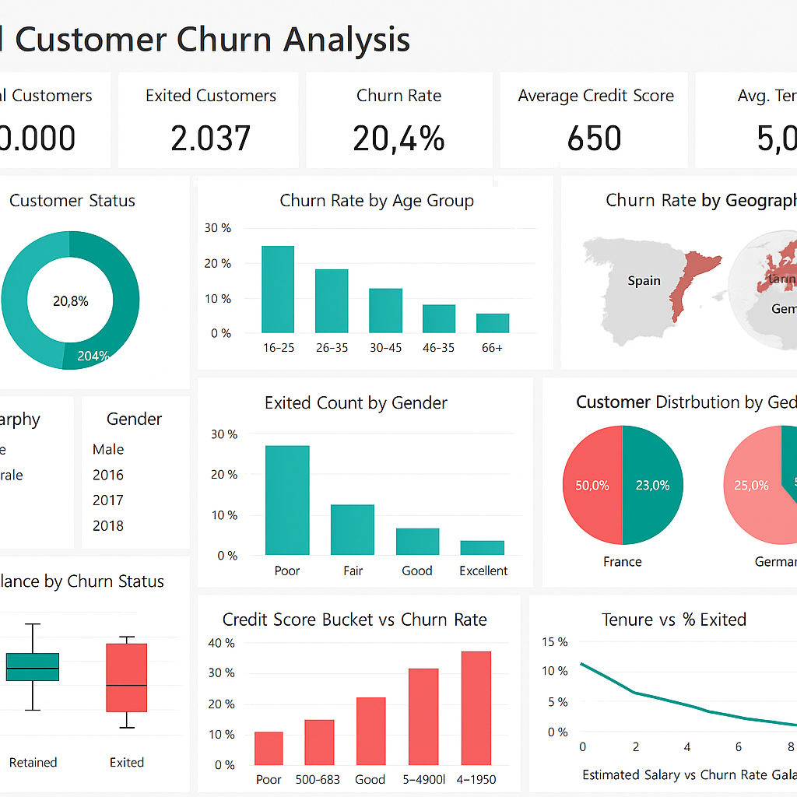

Kadambala Venu Gopala Rao
Senior Analyst – BI & Visualization at LatentView Analytics
Data Analyst with 4 years of experience delivering data-driven insights across business intelligence, reporting, and advanced analytics in enterprise environments. Skilled in SQL, Power BI, Tableau, Databricks, Alteryx, Excel, and Python to analyze large datasets, build machine learning models, execute A/B testing experiments, and develop scalable dashboards that support strategic decision-making.
Profile Overview
About Me
Professional Summary
I am a Senior Data Analyst with 4 years of experience delivering data-driven insights across business intelligence, reporting, and advanced analytics in enterprise environments. My career spans analytics consulting at LatentView Analytics, automated reporting at Empower Global Business Services, and enterprise data solutions at Accenture.
My technical foundation centers on SQL, Power BI, Tableau, Databricks, Alteryx, Excel, and Python to analyze large datasets, automate complex workflows, implement machine learning and predictive models, and design rigorous A/B testing experiments. I regularly collaborate with business, product, and engineering teams to ensure high data accuracy, streamline reporting processes, and translate complex data into clear, actionable recommendations for senior stakeholders.
I also have proven experience mentoring junior analysts on data storytelling, visualization design principles, DAX optimization, and analytical problem-solving frameworks to elevate overall team delivery standards.
Career Snapshot
Technical Proficiency
Technical Skills
Core competencies and technologies from enterprise engagements
Languages
Query languages and data scripting tools used for analysis, modeling, and automation.
Database & Warehousing
Enterprise databases, cloud data warehouses, lakehouse platforms, and query environments.
Visualization & BI
Interactive dashboards, workflow automation tools, and executive business reports.
Analytics & ML
Data modeling methodologies, machine learning, A/B testing, and quality assurance.
Track Record
Work Experience
4 years of enterprise experience across consulting and multinational organizations
Senior Analyst – BI & Visualization
LatentView Analytics · Bengaluru, India
- Spearheaded customer analytics initiatives by mining large-scale transactional and behavioral datasets across 5+ client accounts, uncovering high-impact patterns, segment trends, and actionable growth opportunities that directly influenced business strategy.
- Engineered 15+ advanced Tableau dashboards and Power BI solutions focused on customer lifecycle analytics — tracking acquisition funnels, retention curves, churn indicators, and revenue attribution across 4+ business verticals.
- Translated raw customer data into strategic narratives by developing predictive trend models, machine learning classification pipelines, and cohort analyses, reducing client reporting cycle time by 35% and directly influencing go-to-market decisions and resource allocation strategies.
- Designed and evaluated multi-cohort A/B testing experiments to measure campaign variant effectiveness, calculating statistical significance, p-values, and conversion lift across product funnels.
- Drove end-to-end analytical engagements — from stakeholder discovery and KPI definition through data modeling, visualization delivery, and executive-level presentation — across concurrent client accounts.
- Mentored a team of 4 junior analysts on advanced data storytelling, DAX optimization, visualization design principles, and analytical problem-solving frameworks, improving overall team delivery speed by 25%.
- Designed and implemented robust data models and pipelines across Snowflake and Databricks, structuring dimensional schemas and optimizing query performance by 40%, supporting high-volume analytical workloads and cross-functional reporting pipelines.
- Established and evangelized Centre of Excellence standards by building reusable analytical frameworks, standardized metric libraries, and scalable reporting templates adopted as benchmarks across global client engagements.
Business Intelligence Analyst
Empower Global Business Services · Bengaluru, India
- Built and maintained 20+ automated business and management reporting solutions using SQL, Power BI, and Alteryx, enabling 50+ stakeholders to track KPIs and monitor business performance in real time.
- Designed 10+ end-to-end data workflows in Alteryx for data extraction, cleansing, validation, and transformation, reducing manual effort by 60% and improving reporting turnaround time by 3 days.
- Developed and optimized complex SQL queries (joins, aggregations, CTEs) across SQL Server and Amazon Redshift to support analytical and reporting needs.
- Collaborated with business, product, and data teams to gather requirements, define metrics, and ensure consistency and accuracy of data across reports and dashboards.
- Performed data reconciliation and quality checks across 8+ data sources, reducing reporting discrepancies by 45% and ensuring trusted, audit-ready data for senior decision-makers.
- Enhanced existing dashboards and reports by automating repetitive processes and improving performance, scalability, and usability for recurring business use cases.
- Presented insights through clear, intuitive dashboards and structured reports, translating complex data into actionable recommendations for senior stakeholders.
Data Analyst
Accenture · Bengaluru, India
- Delivered 30+ client-facing analytical and reporting solutions using SQL, PL/SQL, Snowflake, and Toad, supporting operational and management reporting requirements across 6+ large-scale enterprise projects.
- Developed and maintained 25+ Power BI dashboards and Excel-based reports, creating DAX measures and structured data models to track KPIs, trends, and performance metrics for 100+ business stakeholders.
- Utilized Python for data preparation, exploratory machine learning analysis, and validation checks to support reporting accuracy and business analysis needs across project deliverables.
- Ensured data quality and consistency through cleansing, reconciliation, and validation across multiple data sources, collaborating with stakeholders to resolve data issues and change requests.
- Coordinated 10+ deployment activities by preparing production scripts and validating environmental readiness, achieving a 98% post-deployment success rate with zero critical rollback incidents.
- Star Performer Award – Accenture, awarded for exceptional contributions to project success and consistently delivering quality integration solutions.
Portfolio Showcase
Featured Analytics Projects
Interactive business intelligence dashboards, machine learning solutions, and A/B testing pipelines

Customer Churn & Retention Analytics Dashboard
Engineered an end-to-end customer churn analysis and Power BI diagnostic solution examining customer attrition across demographic slices, credit score distributions, and account balances. Applied machine learning classification principles to evaluate feature importance and isolate highest-risk customer cohorts, while implementing dynamic DAX KPIs tracking total churn rate (20.4%), exited count, and tenure drop-offs.
A/B Testing Framework & Databricks Analytics Pipeline
Designed a statistically robust A/B testing evaluation framework integrated into Databricks lakehouse pipelines and automated ETL workflows. Evaluated customer conversion experiments, feature rollouts, and pricing variants with automated two-sample hypothesis testing, while streamlining multi-source data transformations and ensuring audit-ready metric consistency for decision-makers.
Academic & Professional Credentials
Education & Certifications
Master of Business Administration
Information Technology Management
Jain University, Bengaluru
Focus on strategic IT management, technology governance, business intelligence systems, and enterprise data leadership.
Bachelor of Engineering
Computer Science
Bharath University, Chennai
Core grounding in data structures, algorithms, relational database systems (RDBMS), object-oriented programming, and operating systems.
Certifications & Honors
Databricks Certified
Data Analyst Associate
Tableau Desktop Certified
Certified Associate
Microsoft Certified
Power BI Data Analyst Associate
Microsoft Certified
Azure Fundamentals (AZ-900)
Star Performer Award
Accenture · Exceptional Contributions & Quality Integration
Verified Credentials
Industry Standard Validated Accreditations
Get In Touch
Contact & Connect
Available for Senior Data Analyst, BI, Databricks, and Analytics opportunities
Bangalore, Karnataka, India
Open to Remote, Hybrid, and Relocation roles